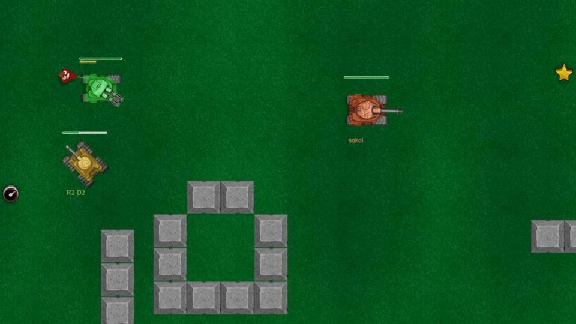
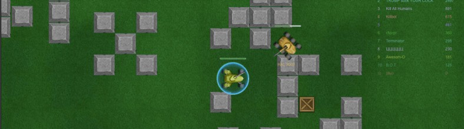
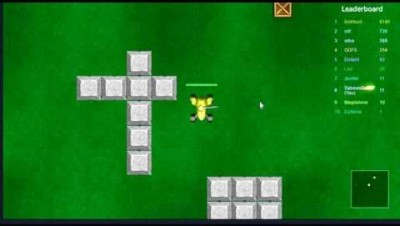

The Hard Truth About Your Bist.io Runs
You keep getting blown up in the first thirty seconds. You spawn, roll straight into the open field, eat a shell to the face, and respawn. I've logged 2000 hours in Bist.io, and watching you play is painful. You treat this like a mindless shooting gallery. It's not. Bist.io is a brutal tank battle arena where every wall, every star, and every shot matters. You are ignoring the core mechanics of cover, upgrades, and reload management. Stop blaming lag. Your brain is the bottleneck. Read these fatal mistakes. Fix them. Or stay at the bottom of the leaderboard.

Mistake 1: You Fight in the Open Without Cover
What you're doing wrong: You spawn and immediately drive your tank into the open field, chasing the nearest enemy across wide-open ground with zero obstacles nearby. You think raw aggression wins fights, so you abandon every wall, building, and barrier to pursue a kill. You treat cover like a suggestion instead of a survival requirement, constantly exposing your tank to crossfire from multiple angles while you tunnel-vision on a single target.
Why it's killing your runs: Bist.io's maps are designed so that tanks in the open are sitting ducks. Without walls to block incoming shells, you eat every shot from every direction. A tank behind cover only needs to expose its barrel to fire, while you expose your entire hull. The damage you take crossing open ground often leaves you at half health before you even reach your target. By the time you get in range, you're one shot from dead — and every enemy in the area knows it.
How to fix it: Always move wall-to-wall. Before you drive anywhere, identify the nearest piece of cover and plan your route through it. When you engage an enemy, position yourself so a wall is between you and at least one potential threat direction. Peek out to fire, then pull back behind cover while your shell reloads. If you must cross open ground, do it at full speed in a zigzag pattern — never drive in a straight line. Cover is not optional in Bist.io. It is the single most important mechanic in the game.
Mistake 2: You Waste Your Shots on Destructible Walls
What you're doing wrong: You see an enemy duck behind a brick wall and immediately start blasting the wall to break through. You dump shell after shell into the barricade, thinking you're being aggressive. Meanwhile, the enemy on the other side is calmly reloading, repositioning, and waiting for you to run dry. You burn through your entire ammo supply on terrain destruction, leaving yourself completely defenseless when they pop out and fire.
Why it's killing your runs: Every shell you waste on a wall is a shell you don't have for an enemy tank. Bist.io's reload time is punishing — each shot you fire creates a window where you can't respond to threats. The enemy behind that wall knows exactly how many shots you've fired. They count your ammo. The moment you stop shooting to reload, they roll out and kill you with a single well-placed shell. You handed them the engagement on a silver platter.
How to fix it: Stop shooting walls. If an enemy hides behind cover, reposition instead of destroying it. Circle around to their flank while they think you're still frontally engaged. Force them to move by threatening from a new angle. If you absolutely must break a wall, fire one or two shells maximum, then immediately reposition so they can't predict where you'll emerge. Save your ammo for tanks, not terrain. A loaded gun behind cover beats an empty gun in the open every single time.
Mistake 3: You Ignore Star Upgrades
What you're doing wrong: Stars appear on the battlefield after tanks are destroyed, and you treat them like background decoration. You're so focused on hunting the next enemy that you drive right past glowing upgrade stars lying on the ground. You think kills are the only thing that matters, so you chase a fleeing tank across half the map while three stars sit uncollected behind you. Meanwhile, the player who picks them up gets faster, stronger, and deadlier with every star.
Why it's killing your runs: Stars are the core progression mechanic in Bist.io. Each star upgrades your tank — faster movement, quicker reload, more damage, better handling. A tank with three star upgrades will out-DPS and out-maneuver a tank with zero upgrades every single time, regardless of player skill. By ignoring stars, you are voluntarily fighting at a permanent disadvantage. The player who collects five stars while you chase one kill will eventually find you, and their upgraded tank will shred yours in two shots instead of four.
How to fix it: Treat every star on the ground as a priority target. When a tank dies near you, immediately grab the star before re-engaging. Make a mental note of star spawn locations and patrol routes that pass through them. If you see a star and an enemy at the same time, grab the star first — the upgrade will help you win the fight that follows. A fully upgraded tank in Bist.io is a terrifying force. Be that tank, not the underpowered one who skipped every star on the map.

Mistake 4: You Don't Manage Your Reload Timing
What you're doing wrong: You fire your shell the instant it's loaded, every single time, regardless of whether you have a clear shot. You spam shells down corridors, into walls, at long-range targets you can't hit. You treat your gun like a machine gun instead of a precision cannon. When an enemy rounds the corner two seconds later, your barrel is empty and you stare at the reload bar while they line up a perfect shot on your stationary tank.
Why it's killing your runs: Bist.io's reload time is the most critical combat mechanic in the game. Every shot you fire starts a reload window of roughly two seconds — two seconds where you cannot defend yourself. Skilled players watch your muzzle flash and count your shots. The moment you fire your last shell, they push aggressively because they know you're helpless. You are literally announcing your vulnerability to the entire lobby with every wasted shot, and they are punishing you for it.
How to fix it: Only fire when you have a clear, high-probability shot. If the enemy is behind cover or moving erratically, hold your shell and wait for a better angle. After firing, immediately retreat behind cover — never stand in the open during your reload. Count the enemy's shots too: when they fire, that's your window to push. Reload management is what separates the top of the leaderboard from the bottom. A tank that always has a shell ready is a tank that controls every engagement.
Mistake 5: You Chase Kills Instead of Controlling the Map
What you're doing wrong: You see an enemy at low health and chase them across the entire map, abandoning good positioning, leaving your flank exposed, and ignoring every other threat on the field. You want the kill credit so badly that you tunnel-vision on one fleeing tank while two others roll up behind you. You treat Bist.io like a deathmatch where kills are the only objective, completely ignoring map control, star spawns, and strategic chokepoints.
Why it's killing your runs: Bist.io is a map control game, not a kill counter. The player who holds the center of the map — with its dense cover, star spawns, and multiple escape routes — will rack up more kills passively than you will by chasing one wounded tank across the border. When you abandon your position to chase, you give up map control for free. The tank that replaces you in the center gets all the stars, all the cover, and all the easy engagements. You get nothing but a long walk back after you respawn.
How to fix it: Set a strict chase limit: if an enemy moves more than three tank-lengths away from your controlled zone, let them go. They'll be back — they always come back. Instead, return to your position, collect any nearby stars, and wait for the next engagement. Hold the center of the map where cover is densest and stars spawn most frequently. Let the kills come to you. The player who controls the map controls the game. Chasing is how you lose everything.

Mistake 6: You Ignore Your Blind Spots
What you're doing wrong: You aim your turret forward and never check your sides or rear. You push into a corridor focused entirely on what's ahead, completely blind to flanking tanks. You hear the sound of shells landing nearby and ignore it because it's not coming from your front. You assume if there's no enemy in your crosshairs, you're safe. Then a tank appears behind you, fires one shell into your unprotected rear armor, and you're dead before you can even turn your turret.
Why it's killing your runs: Bist.io tanks are most vulnerable from the sides and rear. A shot to your flank or back deals significantly more damage than a frontal hit. Skilled players know this — they don't fight you head-on. They wait for you to engage someone else, then flank from the side or sneak up from behind. By the time you hear their shell, you're already taking critical damage. Your forward-focused awareness is a death sentence in a game where threats come from 360 degrees.
How to fix it: Constantly rotate your turret to check your flanks and rear, even when you're not in combat. Every five seconds, do a full 360-degree sweep with your camera. Listen for shell impacts behind you — if you hear them, someone is there. When you engage an enemy, always position yourself with your back to a wall so no one can flank you from behind. If you must fight in the open, keep moving so you're a harder target for approach tanks. Awareness wins gunfights. Tunnel vision gets you killed.
The Bottom Line
Here is the brutal truth about Bist.io. The players who dominate the leaderboard aren't just faster on the trigger. They are tactical operators. They treat cover, upgrades, and reload timing as sacred mechanics. They don't fight in the open; they fight behind walls. They don't chase kills; they control the map. They collect every star, manage every shot, and watch every angle. Stop playing like a mindless brawler and start playing like a tank commander. Master your cover, respect your reloads, and stop feeding the leaderboard. Now get in the arena and prove you belong at the top.